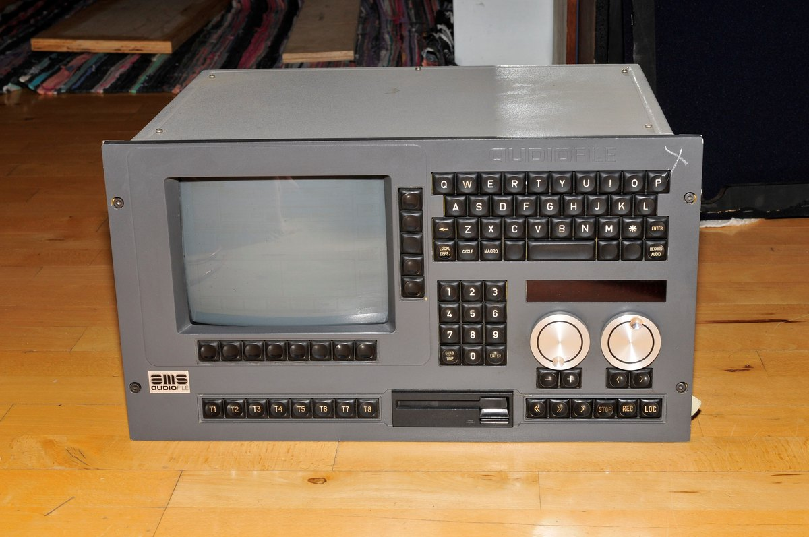

AMS AudioFile
The first dedicated hard-disk audio editing workstation — scrub the jog wheel through sound and rearrange it without ever destroying the original

Overview
The AMS AudioFile, launched in 1984, is widely credited as the first dedicated, commercially available hard-disk audio editing system — the direct ancestor of the digital audio workstation. Made by Advanced Music Systems in Burnley, England, it stored recorded audio on hard disks rather than magnetic tape and let engineers perform edits on a waveform display using a jog/shuttle wheel and a bank of labelled function keys. Edits were recorded as an Edit Decision List (EDL) — a set of pointers to the original material — so nothing was ever destructively altered. The console played back the assembled sequence in real time, collapsing hours of splices into an immediate, reversible creative gesture.
The physical instrument is striking: a tall, dark console crowded with illuminated switches and a prominent central jog wheel. It became a fixture of British post-production for film and television, and its interaction model — scrubbing through time, marking in/out points, reordering without destroying the source — carried directly into the modern DAW. A surviving example is held in the collection of the Canada Science and Technology Museum.
Deep dive
The console's central physical interaction is a jog/shuttle wheel: the engineer rocks it forward and back to scrub the audio waveform through the display, hunting precisely for a sound to cut. This is the ancestor of every DAW scrub and timeline jog control — here a substantial, tactile piece of hardware rather than a cursor on a screen.
Audio lived on hard disk, and edits were recorded as an Edit Decision List — references to the original audio rather than copies. Because the source was never altered, edits could be undone, refined and reordered without fidelity loss. This conceptual breakthrough is what made the DAW possible.
The AudioFile was a tall, dark desk of illuminated labelled keys and a central wheel — a studio culture of physical, hands-on mixing now largely displaced by a mouse and software. The interface was as much a piece of furniture as a tool.
AMS is credited with the first dedicated hard-disk audio editor; the system's descendants (the AudioFile Plus, and later AMS Neve systems) carried the interaction model forward. It sits apart from the museum's synthesizers and samplers (Fairlight, Synclavier, PPG Waveterm) because it is an editor of existing recordings rather than an instrument or a sample source.
Team & pioneers
- Stuart Nevison. Founder of AMS.
- Mark Crabtree. Co-founder and principal engineer of AMS; later AMS Neve.
- Advanced Music Systems. Burnley, Lancashire, England; merged with Neve to form AMS Neve.